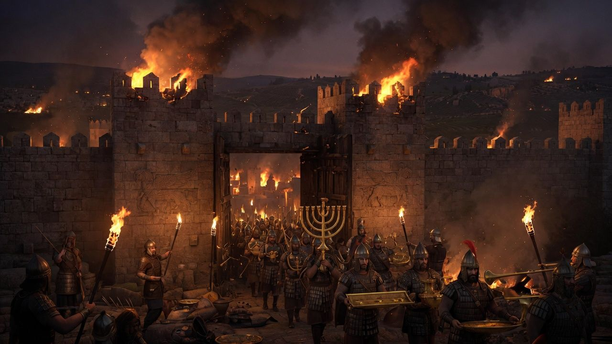
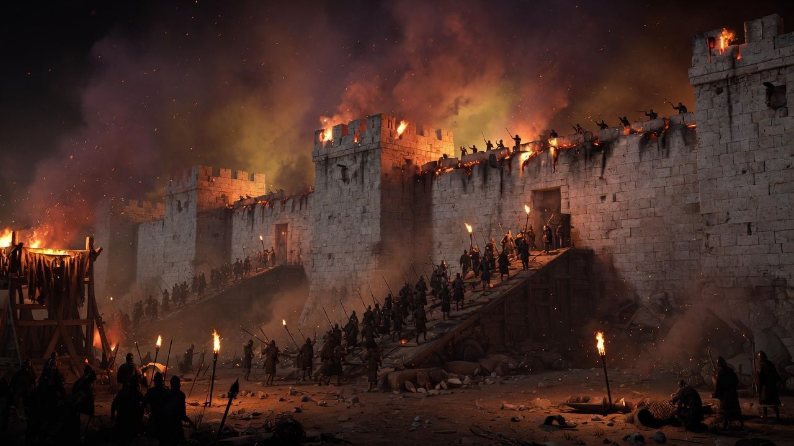

Prophetic Horizon • Historicist Continuum
605 B.C.

On the ground
In the prophecy
Why it still matters
Kingdom
Babylon — Head of Gold
Companion vision
Daniel 7: winged lion
Span
605–539 B.C.
This sitting
Open cinematic map →
Lesson nodes

Historical Context
The exilic world Daniel entered
Primary witness
Prophetic reading
Bible Section
Key Themes
The King James chapter for this sheet loads with the desk.
UNIT 00
•
5 min read
•
Hermeneutics & Foundations
The Prophetic Blueprint: Why Daniel's Unbroken Chain Centers on Jesus Christ
God's historical roadmap from exile to the cross to the everlasting kingdom — and why how you read decides what you see.
The siege is the door of the book
Daniel opens at 605 B.C. Walk Jerusalem into Babylon on the map, then stand before the whole image — the statue this book will take apart sitting by sitting.
Checkpoint • Active Recall
5 Questions to Advance
Consolidate Prophetic Understanding
Active recall cements prophetic dates and biblical theology into permanent memory. Test your comprehension before unlocking the next sheet: